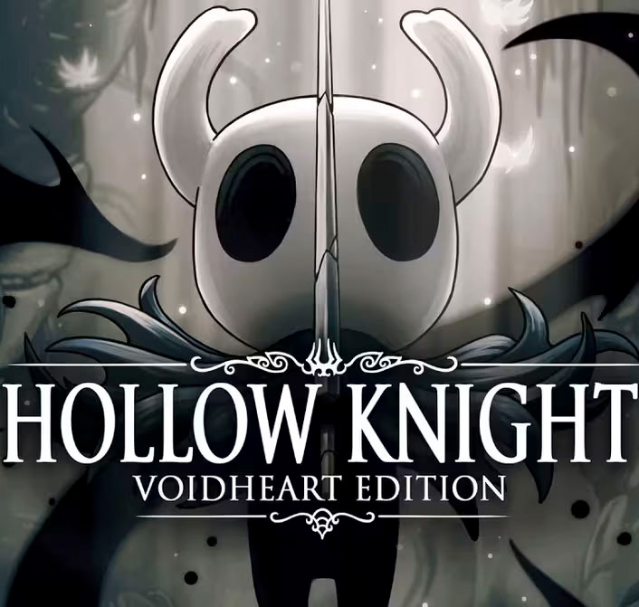

| 返回首页 | ——一名神秘的漫游者，以破骨钉为武器，潜入地表之下的圣巢，开始冒险之旅 |
|  | 背景故事 小骑士是一个被抛弃的容器。它是苍白之王与白色夫人结合的产物之一，诞生于深渊，外壳内部盛有虚空。大黄蜂与小骑士同父异母，是它的雌性同胞。小骑士与其他容器同胞一样没有性别。 小骑士从深渊的出生地爬出来时，看到苍白之王正带着它的同胞空洞骑士离开深渊。后来深渊的入口被封印，而小骑士也坠回深渊。在这之后的一段时间里，虽然深渊的入口被关闭，小骑士与它的一些同胞还是成功逃离了深渊。 最后，由于某些原因，小骑士在圣巢的边界之外游荡。在那里停留的时候，小骑士忘记了不少事情，但也增长了韧性。之后，它遵循辐光或是空洞骑士的召唤回到了圣巢。 |